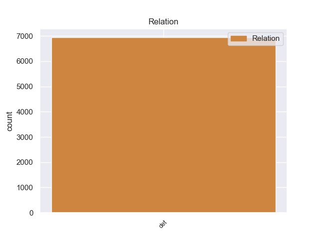
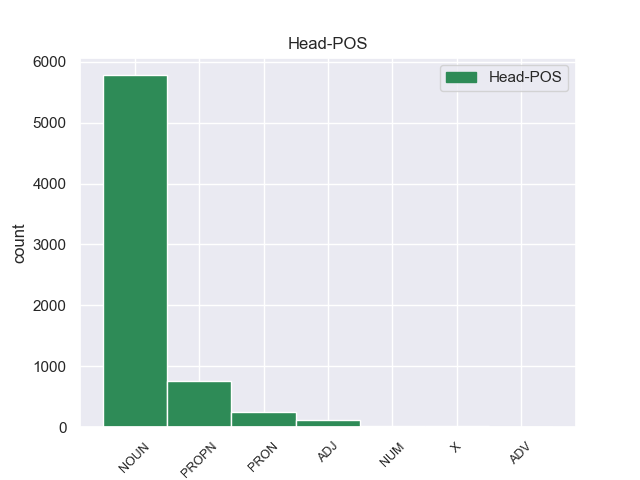
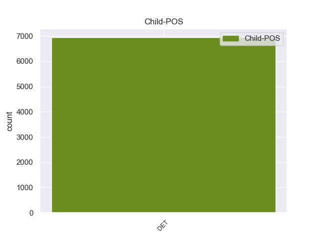

Distribution of features within this leaf



Agreement Rules sorted by frequency.
- When the dependent token is the determiner(det) of the head token, and the dependent token is DET.
1 Ευελπιστώ _ _ _ _ 0 _ _ _
2 ότι _ _ _ _ 0 _ _ _
3 η _ _ _ _ 0 _ _ _
4 απόφαση _ _ _ _ 0 _ _ _
5 αυτή _ _ _ _ 0 _ _ _
6 , _ _ _ _ 0 _ _ _
7 συμπεριλαμβανομένης _ _ _ _ 0 _ _ _
8 και _ _ _ _ 0 _ _ _
9 της _ _ _ _ 0 _ _ _
10 αιτιολογικής _ _ _ _ 0 _ _ _
11 έκθεσης _ _ _ _ 0 _ _ _
12 που _ _ _ _ 0 _ _ _
13 την _ _ _ _ 0 _ _ _
14 συνοδεύει _ _ _ _ 0 _ _ _
15 , _ _ _ _ 0 _ _ _
16 θα _ _ _ _ 0 _ _ _
17 διαβιβαστεί _ _ _ _ 0 _ _ _
18 σ _ _ _ _ 0 _ _ _
19 τις _ _ _ _ 0 _ _ _
20 γαλλικές _ _ _ _ 0 _ _ _
21 αρχές _ _ _ _ 0 _ _ _
22 , _ _ _ _ 0 _ _ _
23 εφόσον _ _ _ _ 0 _ _ _
24 υπερψηφιστεί _ _ _ _ 0 _ _ _
25 από _ _ _ _ 0 _ _ _
26 το ο DET _ Case=Acc|Definite=Def|Gender=Neut|Number=Sing|PronType=Art 27 det _ _
27 Κοινοβούλιο κοινοβούλιο NOUN _ Case=Acc|Gender=Neut|Number=Sing 0 _ _ _
28 . _ _ _ _ 0 _ _ _
Disagree Examples:
1 Η _ _ _ _ 0 _ _ _
2 Διεθνής _ _ _ _ 0 _ _ _
3 Επιτροπή _ _ _ _ 0 _ _ _
4 του _ _ _ _ 0 _ _ _
5 Ερυθρού _ _ _ _ 0 _ _ _
6 Σταυρού _ _ _ _ 0 _ _ _
7 ανακοίνωσε _ _ _ _ 0 _ _ _
8 ότι _ _ _ _ 0 _ _ _
9 « _ _ _ _ 0 _ _ _
10 η ο DET DET Case=Nom|Definite=Def|Gender=Fem|Number=Sing|PronType=Art 11 det _ _
11 Επικεφαλής επικεφαλής ADJ ADJ Case=Nom|Gender=Masc|Number=Sing 0 _ _ _
12 των _ _ _ _ 0 _ _ _
13 Ανθρωπιστικών _ _ _ _ 0 _ _ _
14 Υπηρεσιών _ _ _ _ 0 _ _ _
15 των _ _ _ _ 0 _ _ _
16 Ηνωμένων _ _ _ _ 0 _ _ _
17 Εθνών _ _ _ _ 0 _ _ _
18 , _ _ _ _ 0 _ _ _
19 Βάλερι _ _ _ _ 0 _ _ _
20 Έιμος _ _ _ _ 0 _ _ _
21 , _ _ _ _ 0 _ _ _
22 μετέβη _ _ _ _ 0 _ _ _
23 την _ _ _ _ 0 _ _ _
24 Τετάρτη _ _ _ _ 0 _ _ _
25 σ _ _ _ _ 0 _ _ _
26 την _ _ _ _ 0 _ _ _
27 συνοικία _ _ _ _ 0 _ _ _
28 Μπάμπα _ _ _ _ 0 _ _ _
29 Αμρ _ _ _ _ 0 _ _ _
30 , _ _ _ _ 0 _ _ _
31 της _ _ _ _ 0 _ _ _
32 πόλης _ _ _ _ 0 _ _ _
33 Χομς _ _ _ _ 0 _ _ _
34 σ _ _ _ _ 0 _ _ _
35 τη _ _ _ _ 0 _ _ _
36 Συρία _ _ _ _ 0 _ _ _
37 , _ _ _ _ 0 _ _ _
38 μια _ _ _ _ 0 _ _ _
39 εβδομάδα _ _ _ _ 0 _ _ _
40 μετά _ _ _ _ 0 _ _ _
41 την _ _ _ _ 0 _ _ _
42 αποχώρηση _ _ _ _ 0 _ _ _
43 των _ _ _ _ 0 _ _ _
44 ανταρτών _ _ _ _ 0 _ _ _
45 από _ _ _ _ 0 _ _ _
46 την _ _ _ _ 0 _ _ _
47 περιοχή _ _ _ _ 0 _ _ _
48 » _ _ _ _ 0 _ _ _
49 . _ _ _ _ 0 _ _ _
1 Η _ _ _ _ 0 _ _ _
2 διεθνής _ _ _ _ 0 _ _ _
3 ανθρωπιστική _ _ _ _ 0 _ _ _
4 οργάνωση _ _ _ _ 0 _ _ _
5 του _ _ _ _ 0 _ _ _
6 Ερυθρού _ _ _ _ 0 _ _ _
7 Σταυρού _ _ _ _ 0 _ _ _
8 ανέφερε _ _ _ _ 0 _ _ _
9 ότι _ _ _ _ 0 _ _ _
10 " _ _ _ _ 0 _ _ _
11 δίνει _ _ _ _ 0 _ _ _
12 μάχη _ _ _ _ 0 _ _ _
13 για _ _ _ _ 0 _ _ _
14 την _ _ _ _ 0 _ _ _
15 παροχή _ _ _ _ 0 _ _ _
16 βοήθειας _ _ _ _ 0 _ _ _
17 σ _ _ _ _ 0 _ _ _
18 το ο DET AtDf Case=Acc|Gender=Neut|Number=Sing 21 det _ _
19 συνεχώς _ _ _ _ 0 _ _ _
20 αυξανόμενο _ _ _ _ 0 _ _ _
21 αριθμό αριθμός NOUN NOUN Case=Acc|Gender=Masc|Number=Sing 0 _ _ _
22 νεόπτωχων _ _ _ _ 0 _ _ _
23 σ _ _ _ _ 0 _ _ _
24 την _ _ _ _ 0 _ _ _
25 Ευρώπη _ _ _ _ 0 _ _ _
26 " _ _ _ _ 0 _ _ _
27 . _ _ _ _ 0 _ _ _
1 Δεν _ _ _ _ 0 _ _ _
2 είπατε _ _ _ _ 0 _ _ _
3 τι _ _ _ _ 0 _ _ _
4 πιστεύετε _ _ _ _ 0 _ _ _
5 σχετικά _ _ _ _ 0 _ _ _
6 με _ _ _ _ 0 _ _ _
7 το ο DET DET Case=Acc|Definite=Def|Gender=Neut|Number=Sing|PronType=Art 10 det _ _
8 " _ _ _ _ 0 _ _ _
9 περισσότερη _ _ _ _ 0 _ _ _
10 Ευρώπη Ευρώπη PROPN PROPN Case=Acc|Gender=Fem|Number=Sing 0 _ _ _
11 " _ _ _ _ 0 _ _ _
12 . _ _ _ _ 0 _ _ _
1 Σύμφωνα _ _ _ _ 0 _ _ _
2 με _ _ _ _ 0 _ _ _
3 πληροφορίες _ _ _ _ 0 _ _ _
4 , _ _ _ _ 0 _ _ _
5 μονάχα _ _ _ _ 0 _ _ _
6 την _ _ _ _ 0 _ _ _
7 Παρασκευή _ _ _ _ 0 _ _ _
8 σκοτώθηκαν _ _ _ _ 0 _ _ _
9 31 _ _ _ _ 0 _ _ _
10 άτομα _ _ _ _ 0 _ _ _
11 ( _ _ _ _ 0 _ _ _
12 ενώ _ _ _ _ 0 _ _ _
13 συνολικά _ _ _ _ 0 _ _ _
14 φαίνεται _ _ _ _ 0 _ _ _
15 πως _ _ _ _ 0 _ _ _
16 σκοτώθηκαν _ _ _ _ 0 _ _ _
17 37-40 _ _ _ _ 0 _ _ _
18 άτομα _ _ _ _ 0 _ _ _
19 ) _ _ _ _ 0 _ _ _
20 κατά _ _ _ _ 0 _ _ _
21 τη _ _ _ _ 0 _ _ _
22 διάρκεια _ _ _ _ 0 _ _ _
23 80 _ _ _ _ 0 _ _ _
24 ανεμοστρόβιλων _ _ _ _ 0 _ _ _
25 , _ _ _ _ 0 _ _ _
26 οι ο DET DET Case=Nom|Definite=Def|Gender=Fem|Number=Plur|PronType=Art 27 det _ _
27 οποίοι οποίος PRON PRON Case=Nom|Gender=Masc|Number=Plur|Person=3|PronType=Rel 0 _ _ _
28 έπληξαν _ _ _ _ 0 _ _ _
29 τις _ _ _ _ 0 _ _ _
30 κεντρικές _ _ _ _ 0 _ _ _
31 πολιτείες _ _ _ _ 0 _ _ _
32 των _ _ _ _ 0 _ _ _
33 ΗΠΑ _ _ _ _ 0 _ _ _
34 την _ _ _ _ 0 _ _ _
35 Παρασκευή _ _ _ _ 0 _ _ _
36 . _ _ _ _ 0 _ _ _
1 Το _ _ _ _ 0 _ _ _
2 2002 _ _ _ _ 0 _ _ _
3 χρηματοδοτήθηκαν _ _ _ _ 0 _ _ _
4 10.029 _ _ _ _ 0 _ _ _
5 σχέδια _ _ _ _ 0 _ _ _
6 με _ _ _ _ 0 _ _ _
7 ποσόν _ _ _ _ 0 _ _ _
8 λίγο _ _ _ _ 0 _ _ _
9 μεγαλύτερο _ _ _ _ 0 _ _ _
10 των ο DET DET Case=Gen|Definite=Def|Gender=Fem|Number=Plur|PronType=Art 13 det _ _
11 80 _ _ _ _ 0 _ _ _
12 εκατ. _ _ _ _ 0 _ _ _
13 ευρώ ευρώ NOUN NOUN Case=Acc|Gender=Neut|Number=Sing 0 _ _ _
14 . _ _ _ _ 0 _ _ _